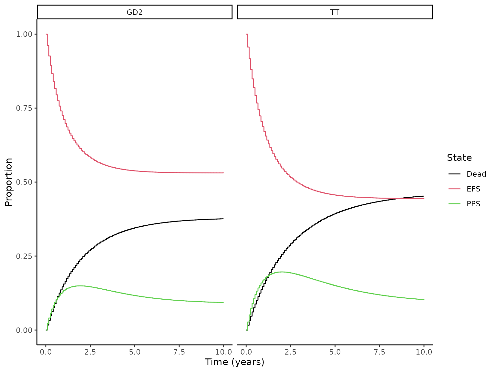

Introduction:
A partitioned survival model (PSM) with N distinct states quantifies the likelihood of a patient occupying each of these states at any specific time, given a certain treatment. This model relies on overlapping survival curves to estimate state membership, requiring a total of N-1 such curves for an N-state configuration.
The model uses the cumulative survival function, \(S_n(t)\), to define the chance of a patient either reaching or surpassing a certain health state \(n\) after time \(t\). For the initial state, the probability is directly indicated by \(S_1(t)\). The determination of membership for intermediate states, from the second to the \((n-1)^{th}\), is achieved through the difference \(S_{n}(t) - S_{n-1}(t)\). The likelihood that a patient advances to the terminal state \(N\), often signifying death, is given by \(1-S_{N-1}(t)\), essentially the complement of the cumulative survival up to the next-to-last state.
For each treatment strategy \(k\), the model predicts separate survival curves over time \(t\) for each treatment approach \(k\) and individual patient \(i\), based on \(L\) parameters \(\alpha_l\), which may be modified by covariates \(x_l\),
\[ \begin{aligned} S_{n}(t|\alpha_{1n}(x_{1n, ik}), \ldots, \alpha_{Ln}(x_{Ln, ik})). \end{aligned} \]
Quality-adjusted life years (QALYs) and total costs for each health state, under a specific treatment and patient scenario, are derived by integrating the survival probability over time, adjusted by quality of life weights and costs. For any health state \(h\), the calculations for QALYs and costs in the \(m^{th}\) costs category are represented as:
\[ \begin{aligned} \rm{QALYs}{hik} &= \int_{0}^{T} q_{hik}(t) e^{-rt} p_{hik}(t)dt \\ \rm{Costs}{m,hik} &= \int_{0}^{T} c_{m,hik}(t) e^{-rt} p_{hik}(t)dt \end{aligned} \]
Here, \(q_{hik}\) denotes the quality-of-life weight, \(c_{m,hik}\) represents annualized costs, \(r\) stands for the discount rate, and \(p_{hik}(t)\) signifies the probability of being in a specific health state at time \(t\). These calculations span over \(T\) time periods to account for QALYs and associated costs.
The model:
Model parameters:
The model parameters include the time horizon of decision problem and states payoffs or rewards.
# Model parameters
params <- list()
params$time_horizon <- 10
params$cycles_per_year <- 12
params$c_TT <- 2000 # place holder
params$c_GD2 <- 3000 # place holder
params$c_PPS <- 3200 # place holder
params$u_EFS <- 0.23 # place holder
params$u_PPS <- 0.23 # place holder
params$disc_rate <- 0.035Survival curves:
The analysis documented by the Survival functions vignette suggests that Gompertz model fits the data best. The parameters of the fitted Gompertz distribution are employed in the section below to predict the cumulative survival curves over the model time horizon.
# Load the fitted `Gompertz` model parameters
models_fit <- NeuroblastomaPSM::parametric_models
# Get the months from 0 to time horizon
time_points <- seq(
from = 0,
to = params$time_horizon,
by = 1 / params$cycles_per_year
)
# Predict cumulative survival
df_survival_curves_long <- lapply(
X = names(models_fit) |>
`names<-`(names(models_fit)),
FUN = function(curve_nm) {
model_fit <- models_fit[[curve_nm]]
end_point <- ifelse(
test = grepl(pattern = "OS", x = curve_nm),
yes = "OS",
no = "EFS"
)
treatment_nm <- gsub(
pattern = paste0(".", end_point),
replacement = "",
x = curve_nm
)
NeuroblastomaPSM::predict_survival_curve(
surv_mod = model_fit,
treatment_name = treatment_nm,
end_point = end_point,
time_points = time_points
)
}
) |>
do.call(
what = rbind,
args = _
) |>
`rownames<-`(NULL)
# View predicted cumulative survival dataframe
rbind(
head(df_survival_curves_long, n = 5),
tail(df_survival_curves_long, n = 5)
)
#> treatment end_point time survival
#> 1 Dinutuximab β EFS 0.00000000 1.0000000
#> 2 Dinutuximab β EFS 0.08333333 0.9613148
#> 3 Dinutuximab β EFS 0.16666667 0.9264001
#> 4 Dinutuximab β EFS 0.25000000 0.8948133
#> 5 Dinutuximab β EFS 0.33333333 0.8661732
#> 480 Isotretinoin OS 9.66666667 0.5485409
#> 481 Isotretinoin OS 9.75000000 0.5481205
#> 482 Isotretinoin OS 9.83333333 0.5477113
#> 483 Isotretinoin OS 9.91666667 0.5473131
#> 484 Isotretinoin OS 10.00000000 0.5469255State membership (markov trace):
This model is represented by three health states, event free survival (EFS), post progression survival (PPS) and death. Using the predicted EFS and OS, state membership is estimated below.
# Pivoting wider using reshape() - long-formatted to wide-formatted
df_survival_curves <- reshape(
data = df_survival_curves_long,
timevar = "end_point",
idvar = c("time", "treatment"),
direction = "wide"
)
# Renaming the columns since reshape() adds a prefix to the column names
names(df_survival_curves) <- gsub("survival\\.", "", names(df_survival_curves))
# Creating new columns
df_survival_curves$PPS <- df_survival_curves$OS - df_survival_curves$EFS
df_survival_curves$D <- 1 - df_survival_curves$OS
# Selecting and ordering the desired columns (select in tidyverse)
df_survival_curves <- df_survival_curves[, c("time", "treatment", "EFS", "PPS", "D")]
# View wide formatted predicted cumulative survival dataframe
rbind(
head(df_survival_curves, n = 5),
tail(df_survival_curves, n = 5)
)
#> time treatment EFS PPS D
#> 1 0.00000000 Dinutuximab β 1.0000000 0.00000000 0.00000000
#> 2 0.08333333 Dinutuximab β 0.9613148 0.02174250 0.01694267
#> 3 0.16666667 Dinutuximab β 0.9264001 0.04059241 0.03300746
#> 4 0.25000000 Dinutuximab β 0.8948133 0.05693773 0.04824901
#> 5 0.33333333 Dinutuximab β 0.8661732 0.07110898 0.06271787
#> 238 9.66666667 Isotretinoin 0.4442937 0.10424725 0.45145908
#> 239 9.75000000 Isotretinoin 0.4442650 0.10385549 0.45187954
#> 240 9.83333333 Isotretinoin 0.4442379 0.10347342 0.45228872
#> 241 9.91666667 Isotretinoin 0.4442122 0.10310083 0.45268695
#> 242 10.00000000 Isotretinoin 0.4441880 0.10273749 0.45307451
# Markov trace
m_markov_trace <- df_survival_curves[, c("EFS", "PPS", "D")]
# Confirm markov trace is valid
stopifnot(
"Markov trace does not sum up to 1." =
all(rowSums(m_markov_trace) == 1)
)
# Visualize the markov trace
df_survival_curves |>
reshape(
data = _,
varying = list(c("EFS", "PPS", "D")),
v.names = "prop",
timevar = "State",
times = c("EFS", "PPS", "D"),
direction = "long"
) |>
ggplot2::ggplot(
mapping = ggplot2::aes(
x = time,
y = prop,
col = State
)
)+
ggplot2::geom_step() +
ggplot2::theme_classic() +
ggplot2::scale_y_continuous(name = "Proportion") +
ggplot2::scale_x_continuous(name = "Time (years)") +
ggplot2::scale_color_manual(
name = "State",
values = c("D"= 1,
"EFS" = 2,
"PPS" = 3),
labels = c("D"="Dead",
"EFS" = "EFS",
"PPS" = "PPS")
) +
ggplot2::facet_wrap(~treatment)
Economic Analysis:
# create matrices for matrix multiplication
m_TR_Isotretinoin <- as.matrix(
df_survival_curves[
df_survival_curves$treatment == "Isotretinoin", c("EFS", "PPS", "D")
]
)
m_TR_Dinutuximab_β <- as.matrix(
df_survival_curves[
df_survival_curves$treatment == "Dinutuximab β", c("EFS", "PPS", "D")
]
)
# create vectors of health states payoffs
v_C_Isotretinoin <- c("EFS" = params$c_TT,
"PPS" = params$c_PPS,
"D" = 0)
v_C_Dinutuximab_β <- c("EFS" = params$c_GD2,
"PPS" = params$c_PPS,
"D" = 0)
v_Util <- c("EFS" = params$u_EFS,
"PPS" = params$u_PPS,
"D" = 0)
# Matrix multiplication of trace by:
## cost per cycle - gives total cost by cycle
v_costs_Isotretinoin <- m_TR_Isotretinoin %*%
(v_C_Isotretinoin / params$cycles_per_year)
v_costs_Dinutuximab_β <- m_TR_Dinutuximab_β %*%
(v_C_Dinutuximab_β / params$cycles_per_year)
## utility by cycle - gives total utility by cycle
v_qalys_Isotretinoin <- m_TR_Isotretinoin %*%
(v_Util / params$cycles_per_year)
v_qalys_Dinutuximab_β <- m_TR_Dinutuximab_β %*%
(v_Util / params$cycles_per_year)
# Combine payoffs' calculations
m_results <- cbind(
"c_Isotretinoin" = v_costs_Isotretinoin,
"c_Dinutuximab_β" = v_costs_Dinutuximab_β,
"q_Isotretinoin" = v_qalys_Isotretinoin,
"q_Dinutuximab_β" = v_qalys_Dinutuximab_β
) |>
`colnames<-`(c("c_Isotretinoin", "c_Dinutuximab_β", "q_Isotretinoin", "q_Dinutuximab_β"))
# Calculate discount weights
v_dw <- 1 /(1 + params$disc_rate) ^ time_points
# Apply discount weights to all columns of results matrix simultaneously
## this gives total discounted costs and qalys over the whole period.
m_disc_res <- v_dw %*% m_results |>
`colnames<-`(c("c_Isotretinoin", "c_Dinutuximab_β", "q_Isotretinoin", "q_Dinutuximab_β"))
# Calculate incremental costs and utilities
inc_cost <- m_disc_res[, "c_Dinutuximab_β"] - m_disc_res[, "c_Isotretinoin"]
inc_qaly <- m_disc_res[, "q_Dinutuximab_β"] - m_disc_res[, "q_Isotretinoin"]
# calculate the ICER
as.numeric(inc_cost / inc_qaly)
#> [1] 68743.58